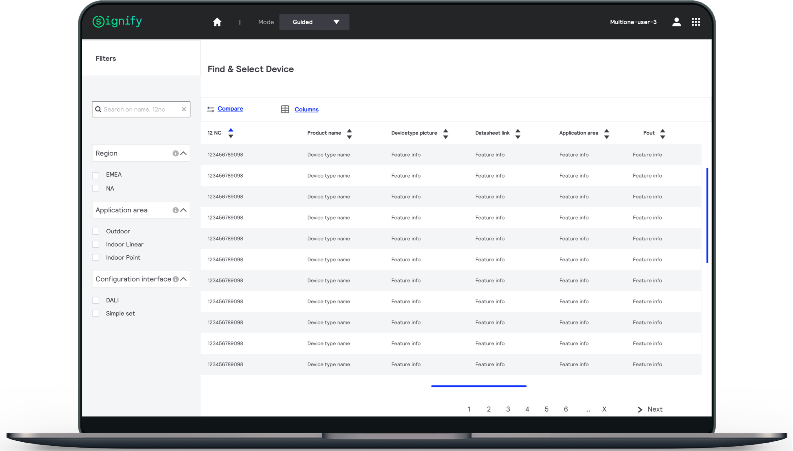
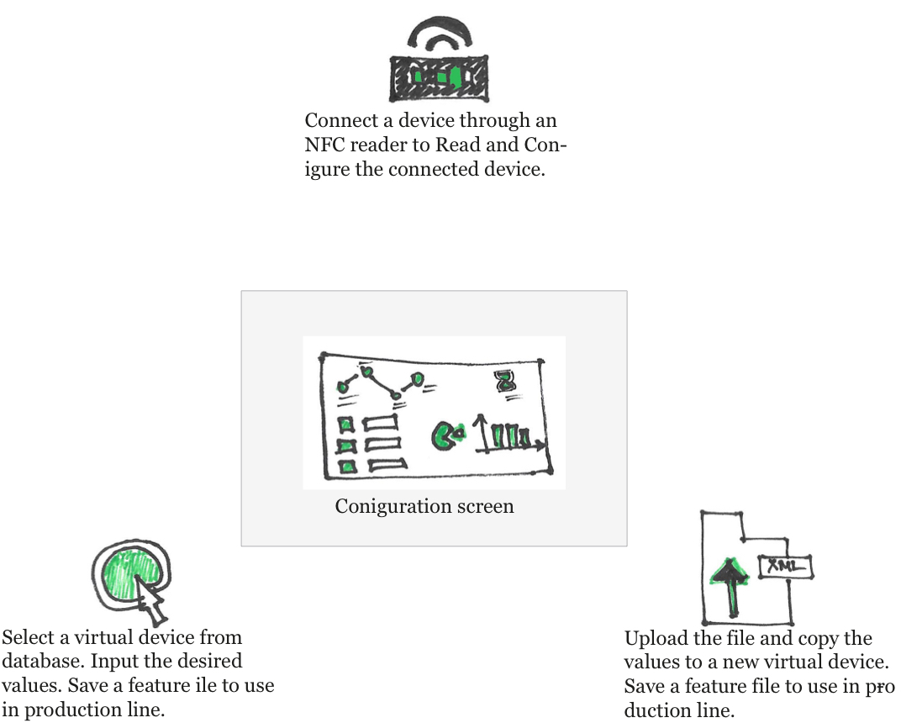
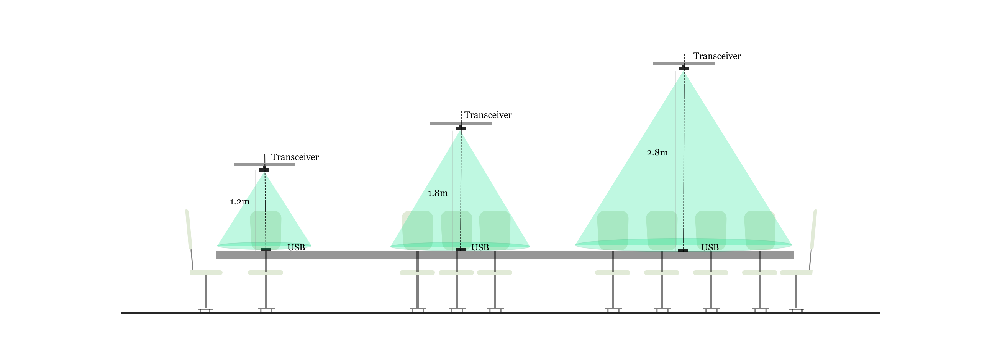

| User Experience Design | User Interaction Design | Visualization and Prototyping |
MultiOne : Signify

MultiOne is an engineering tool that will be used by the OEMs of Signify in their production line. It is a vey strategic program with an enhanced process, orders and hence impacting their revenue generation. I have an unique experience of working with the end Users (OEMs of Signify) and customer (Signify), Branding and Marketing team in prioritising the URS according to the user and market demands.
User can see the status of the established connections very clearly. Appropriate Colors were used to assist in indication. Status update is dynamically displayed on the screen.

With each selection of device,relevant features are displayed by calling API
Lifi : Signify

Visualization to help user understand the basic behaviour of Tranceiver, ceiling height, Work plane in the application

The application is used by the Engineers and Designers of Signify. Currently the process is carried out manually. This application is aimed to solve the design and calculations with the inbuilt formulas and visualisations, and thus needing minimal technical awareness in making the design proposals.
User journeys of Various personas and Users were analysed to finilaze the features and Overall workflow
Various rooms,surface UI componants are built for flexibility in arriving at a desired layout. Auto suggested layout helps the user in getting started with the design. The application allows manual adjustments to the layout.

OSDU Solutions : OSDU; Microsoft; Wipro
The Open subsurface Data Universe is an Industry Forum formed to establish an Open subsurface Reference Architecture: A cloud-native subsurface data platform reference architecture, with usable implementations for Microsoft Azure, Amazon AWS, and Google GCP. Consistent API standards for connecting the Platform with cloud and software vendors, micro services, and proprietary solutions. Master and reference data standards for frictionless integration and data access.
Depending on the choices made in Set-1, the Set -2 form is generated.

After Set-2 inputs, the file is transfered to que of the prepared ingestion files.
The application is data rich where in the data can be ingested in bulk. To manage the process of ingestion, many inputs are necessary. To ease the user, the ingestion form is split in 3 stages. Set -1 has the common inputs for any ingestion. Set -2 form is displayed based on the inputs provided by Set-1. Finally a que is created with prepared files which can be ingested in bulk or induvidually. This platform is aimed to make DATA accessible to research of various users such as Geologists, Petro physicists, Reservoir Engineers, Universities etc. The Data related to Oil and Gas wells & alternative energy farms such as Wind Farms, Solar Farms, Hydrogen, Hydro, Geothermal location in the Subsurface.


The UI of the application is designed based of Fluent design Principles. UI componants are taken from the code pen provided from Microsoft for development. The appliction had be be designed from scratch, and hence choosing colour palette, icons, Style was also part of the design scope.